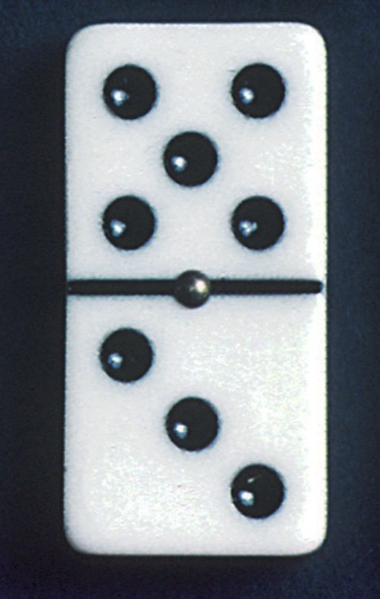

Robótica Computacional 2024.1 - Simulado AI
Observações de avaliações nesta disciplina:
- A prova tem duração de 2 horas.
- Inicie a prova no Blackboard para a ferramenta de Proctoring iniciar. Só finalize o Blackboard quando enviar a prova via Github classroom.
- Durante esta prova vamos registrar somente a tela, não a câmera nem microfone.
- Coloque seu nome e email no README.md do seu repositório.
- Você pode consultar a internet ou qualquer material que usamos no curso, mas não pode se comunicar com pessoas ou colegas a respeito da prova. Também não pode usar ferramentas de IA como chatGPT ou Github Copilot durante a prova.
- Faça commits e pushes frequentes no seu repositório.
- Avisos importantes serão dados na sala da prova.
- Permite-se consultar qualquer material online ou próprio. Não se pode compartilhar informações com colegas durante a prova.
- Faça commits frequentes. O primeiro a enviar alguma ideia será considerado autor original.
- A responsabilidade por ter o setup funcionando é de cada estudante.
- Questões de esclarecimento geral podem ser perguntadas.
- É vedado colaborar ou pedir ajuda a colegas ou qualquer pessoa que conheça os assuntos avaliados nesta prova.
Atualização dos Pacote (ROS 2)
Execute os comandos abaixo para atualizar os pacotes da ros2 obrigatórios para a prova:
cd ~/colcon_ws/src/my_simulation
git stash
git pull
cd ~/colcon_ws/src/insperbot
git pull
cb
Configuração do Pacote (ROS 2)
- Preparação Inicial: Primeiro, aceite o convite do GitHub Classroom e clone o repositório dentro da pasta
colcon_ws/src/no seu SSD. - Criação do Pacote ROS 2: Dentro do diretório do seu repositório, crie um novo pacote nomeado
simulado_ai.- Dica: Para utilizar os modulos desenvolvidos no módulo 3, inclua o pacote
my_packagecomo dependência do seu pacote, e então, importe como nos exemplos do módulo 3.
- Dica: Para utilizar os modulos desenvolvidos no módulo 3, inclua o pacote
Exercício 1 (5)
Baseando-se no código base_control.py do módulo 3, crie um arquivo chamado q1.py contendo uma classe denominada Explorador. Esta classe deve implementar um nó chamado explorador_node, responsável por fazer com que o robô simulado dê uma volta completa ao redor do perímetro interno de um quadrado, mantendo-se junto à parede externa. Ao concluir a volta, o robô deve sair do quadrado e parar.
Utilize o comando abaixo para iniciar o simulador no mapa da prova:
ros2 launch my_gazebo tres_paredes.launch.py
O nó deve:
- Mover o robô para frente até que este encontre uma parede.
- Ao detectar a parede, o robô deve girar e seguir pela próxima parede.
- Repetir o processo até completar uma volta completa, identificando a abertura na parede externa.
- Ao encontrar a abertura, o robô deve sair do quadrado e parar.
Restrições
- Deve existir um arquivo chamado
q1.py. - O programa deve ser executado sem erros.
- A classe deve ser chamada
Explorador. - A implementação deve seguir a estrutura da classe
Explorador, conforme exemplo nobase_control.py. - A função
controldeve ser a única a publicar no tópico/cmd_vel. - A função
controldeve ser idêntica à do arquivobase_control.py. Todas as decisões de controle devem ocorrer dentro dos nós, sem alterações na funçãocontrol.
Rúbrica
- [+0.5] - O programa segue às restrições acima.
- [+1.0] - [1] + O robô gira e se move para frente até encontrar uma parede.
- [+2.0] - [2] + Após encontrar uma parede, o robô gira e segue para a próxima parede, completando uma volta.
- [+1.5] - [3] + O robô encontra a abertura na parede externa, sai do quadrado e para.
Exercício 2 (5)
Crie um arquivo chamado q2.py com uma classe chamada DominoDetector, que possui um método run. Este método deve receber um vídeo e exibir na tela o valor das peças de dominó que aparecem em cada frame.
Baixe o vídeo no seguinte endereço: neste endereço
Exemplo de peça de dominó:

Objetivo
Desenvolver um programa capaz de identificar e exibir na tela o valor das peças de dominó em cada frame do vídeo. Por exemplo, para a peça acima, deve-se exibir 5 por 3.
Grave um vídeo da saída do programa, publique-o no YouTube e inclua o link no arquivo README.md do seu repositório.
Restrições
- Deve existir um arquivo chamado
q2.py - O programa deve ser executado sem erros.
- A classe deve ser chamada
DominoDetector - A classe deve possuir um método
runque, ao receber um frame do vídeo, identifica e exibe o valor da peça de dominó presente no frame. - O programa deve incluir uma função
mainque lê o vídeo e chama o método run para cada frame. - Após a execução do método
runem cada frame, o programa deve exibir o frame com os valores identificados das peças de dominó. - A função
maindeve ser executada apenas se o arquivo for rodado diretamente, não quando importado como módulo.
Rúbrica
- [+0.5] - O programa segue às restrições acima.
- [+0.5] - [1] + O programa consegue distinguir as peças de dominó do fundo.
- [+1.5] - [2] + O programa consegue identificar o valor das peças corretamente em metade dos frames e mostra o vídeo com os valores das peças.
- [+1.5] - [3] + O programa consegue identificar o valor das peças corretamente em todos os frames e mostra o vídeo com os valores das peças.
- [+1.0] - [4] + O programa identifica o valor das peças praticamente sem nenhuma falha (flutuações de 1 ou 2 valores são aceitáveis).